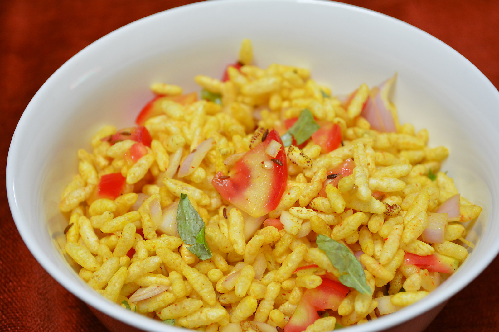

Mumbai Style Spicy Murmura Recipe (Spicy Roasted Puffed Rice)
This snack is one of those dishes which is spicy, tasty and healthy at the same time.
Mumbai Style Spicy Murmura is one of those dishes which is spicy, tasty and healthy at the same time. It is easy to make and is perfect to have during your tea time break. Fill it with the goodness of vegetables and enjoy. Serve Mumbai Style Spicy Murmura along with Masala Chai and Hari Matar Ke Pakode as a tea time snack. If you like this recipe, you can also try other Puffed Rice recipes such as
Puffed Rice Upma Recipe
Puffed Rice Bar Recipe
Bhel Puri Recipe

Prep in: 10 M
Cooks in: 20 M
Total in: 30 M

Makes: 2 Servings
Ingredients
- 2 cups Puffed rice
- Extra Virgin Olive Oil, as required
- 1 teaspoon Cumin seeds (Jeera)
- 4 to 5 Curry leaves
- 1/2 teaspoon Turmeric powder (Haldi)
- 1/2 teaspoon Red Chilli powder
- 1/4 teaspoon Chaat Masala Powder
- 1/2 teaspoon Sugar, optional
- 1 Tomato, finely chopped
- 1 Onion, finely chopped
- 1 to 2 Green Chillies, finely chopped (adjustable)
- 1/2 cup Cucumber, finely chopped (optional)
- 1 teaspoon Lemon juice
How to make Mumbai Style Spicy Murmura Recipe (Spicy Roasted Puffed Rice)
- To begin making the Mumbai Style Spicy Murmura recipe, firstly heat olive oil in a heavy bottomed pan.
- Add the cumin seeds and curry leaves and let it splutter. Once it is done, add the puffed rice, salt, turmeric powder, sugar, red chilli powder and the chaat masala.
- Mix everything properly and roast it for about 5 to 6 minutes, till the puffed rice gets a little crispy. Once done, let it cool down.
- Meanwhile, add tomato, onions, green chillies and cucumber. Add the puffed rice in a bowl and mix everything well.
- Add the lemon juice, mix well and it is ready to be served.
- Serve Mumbai Style Spicy Murmura along with Masala Chai and Hari Matar Ke Pakode as a tea time snack.